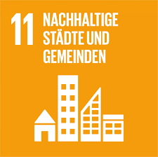

Sustainable Cities and Communities
Cities are centers of innovation and economic growth, but they also face challenges like poverty, inequality and environmental degradation. Goal 11 promotes sustainable urban development to create inclusive, safe, and resilient cities. Cities represent the future of global living. The world’s population reached 8 billion in 2022 with over half living in urban areas. This figure is only expected to rise, with 70 per cent of people expected to live in cities by 2050. However many of these cities are not ready for this rapid urbanisation, and it outpaces the development of housing, infrastructure and services, which led to a rise in slums or slum-like conditions. Urban sprawl, air pollution and limited open public spaces persist in cities. Good progress has been made since the implementation of the SDGs in 2015, and now the number of countries with national and local disaster risk reduction strategies has doubled. But issues still remain and in 2022, only half of the urban population had convenient access to public transport. Sustainable development cannot be achieved without significantly transforming the way urban spaces are built and managed. Efforts must focus on implementing inclusive, resilient and sustainable urban development policies and practices that prioritize access to basic services, affordable housing, efficient transportation and green spaces for all. Why are cities not future proof yet? Most of the urban growth is taking place in small cities and intermediate towns, exacerbating inequalities and urban poverty. Up to 3 billion people worldwide struggle to afford a place to live, and 1.12 billion live in slums or informal settlements without basic services. Creating safe, resilient and sustainable cities requires coordinated investments in affordable housing, climate-resilient infrastructure and inclusive governance. What are some of the most pressing challenges cities are facing? By 2040, more than 2 billion urban residents could face an additional temperature rise of at least 0.5°C, and 36 per cent of the global urban population may endure annual mean temperatures of 29°C or higher. Flood risks are also escalating. In 2025, 1 billion people live in areas prone to severe riverine flooding, half of them in cities. Inequality and the levels of urban energy consumption and pollution are some of the challenges. Cities occupy just 3 per cent of the Earth’s land, but account for 60-80 per cent of energy consumption and 75 per cent of carbon emissions. Many cities are also more vulnerable to climate change and natural disasters due to their high concentration of people and location so building urban resilience is crucial to avoid human, social and economic losses. How does it affect me? All these issues will eventually affect every citizen. Inequality can lead to unrest and insecurity, pollution deteriorates everyone’s health and affects workers’ productivity and therefore the economy, and natural disasters have the potential to disrupt everyone’s lifestyles. Air pollution affecting the health of millions is not only an urban problem, but is also affecting towns and rural areas. What happens if cities are just left to grow organically? The cost of poorly planned urbanization can be seen in some of the huge slums, tangled traffic, greenhouse gas emissions and sprawling suburbs all over the world. By choosing to act sustainably we choose to build cities where all citizens live a decent quality of life, and form a part of the city’s productive dynamic, creating shared prosperity and social stability without harming the environment. Is it expensive to put sustainable practices in place? The cost is minimal in comparison with the benefits. For example, there is a cost to creating a functional public transport network, but the benefits are huge in terms of economic activity, quality of life, the environment, and the overall success of a networked city. What can I do to help achieve this goal? Take an active interest in the governance and management of your city. Advocate for the kind of city you believe you need. Develop a vision for your building, street, and neighbourhood, and act on that vision. Are there enough jobs? Can your children walk to school safely? Can you walk with your family at night? How far is the nearest public transport? What’s the air quality like? What are your shared public spaces like? The better the conditions you create in your community, the greater the effect on quality of life. Sustainable development cannot be achieved without significantly transforming the way urban spaces are built and managed.